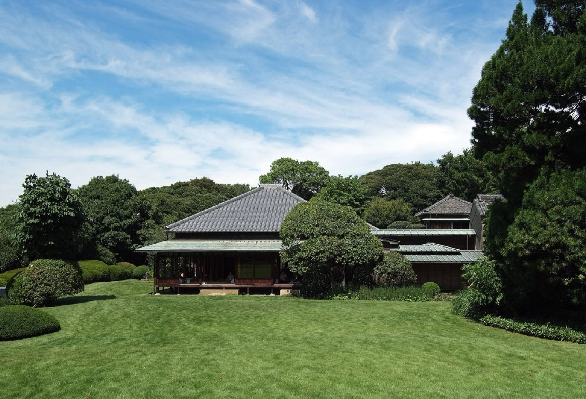

Members
② 幹事・委員会エリア

委員会ごとに個別の鍵がかかっています。所属する委員会のフォルダを開いてください。
※資料の追加・フォームの作成は、事務局アカウントでログインしている場合のみ表示されます(支部管理者ページからも操作できます)。
※資料の追加・フォームの作成は、事務局アカウントでログインしている場合のみ表示されます(支部管理者ページからも操作できます)。
幹事会(全体)
幹事会の
総務委員会
資料・議事録・開催案内
財務委員会
資料・議事録・開催案内
綱紀・研修委員会
資料・議事録・開催案内
厚生委員会
資料・議事録・開催案内
広報委員会
資料・議事録・開催案内
入会審査委員会
資料・議事録・開催案内
無料相談業務委員会
資料・議事録・開催案内
流通委員会
資料・議事録・開催案内
幹事会(全体)
幹事会の
開催案内の
発行すると
総務委員会
総務委員会の
財務委員会
財務委員会の
- PDF財務委員会 前回議事録DL
綱紀・研修委員会
綱紀・研修委員会の
- PDF綱紀・研修委員会 前回議事録DL
厚生委員会
厚生委員会の
- PDF厚生委員会 前回議事録DL
広報委員会
広報委員会の
- PDF広報委員会 前回議事録DL
入会審査委員会
入会審査委員会の
- PDF入会審査委員会 前回議事録DL
無料相談業務委員会
無料相談業務委員会の
- PDF無料相談業務委員会 前回議事録DL
流通委員会
流通委員会の
- PDF流通委員会 前回議事録DL